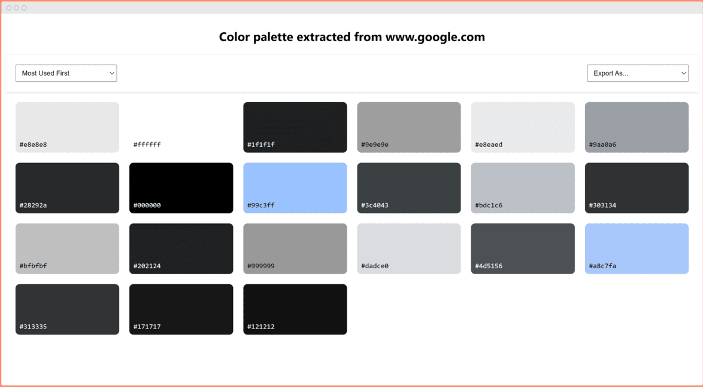

Site Colour Palette Extractor
As a developer who frequently needs to reference color schemes from existing websites, I found that existing tools were either paid or lacking in features. This led me to create Site Colour Palette Extractor - a Chrome extension that makes it easy to extract, analyze, and export color palettes from any website. The tool distinguishes between background and text colors, shows usage frequency, and supports multiple export formats to fit into various design workflows.
Why did I build this
Why I chose this tech stack
HTML
CSS
JavaScript
Problems and Improvements
One of the main challenges was implementing the various export formats, especially PDF and ASE (Adobe Swatch Exchange) formats, which required diving deep into file format specifications and binary data handling.
Building a robust offline functionality was another challenge. I implemented manual color conversion functions (RGB to HSL/HEX) as fallbacks when the external API is unavailable, ensuring the extension remains functional without internet access.
Data serialization for storage proved challenging, particularly when preserving color type information (background vs. text). This required careful consideration of data structures and storage optimization to maintain a smooth user experience.
